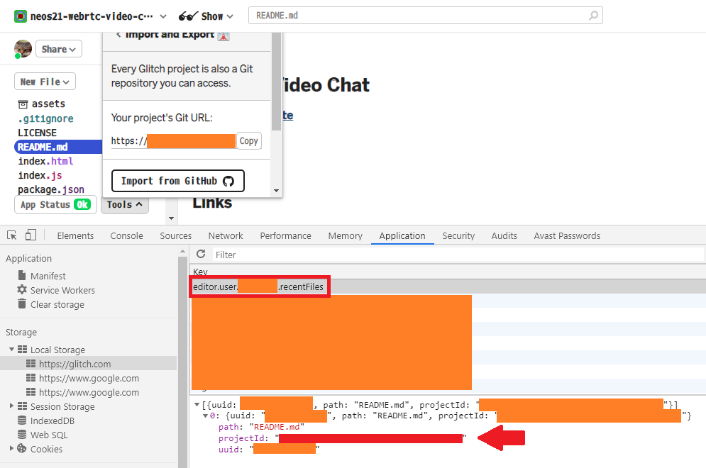
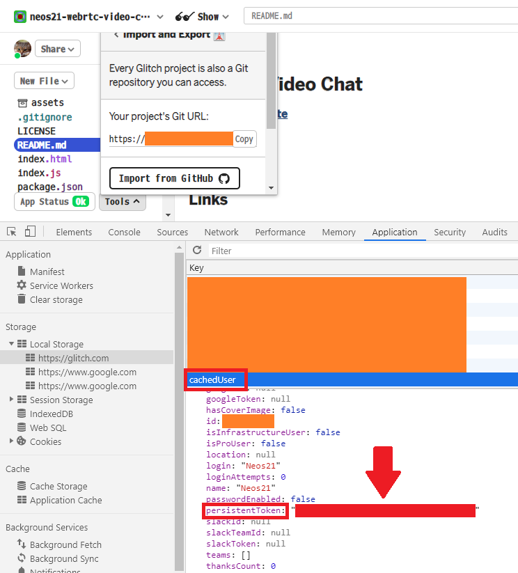

リポジトリの変更を Glitch に転送する GitHub Actions
Glitch という、Node.js アプリが動かせる Heroku みたいな PaaS がある。
Glitch は GitHub リポジトリからのインポート、および GitHub へのエクスポートは出来るが、自動的な同期には対応していない。
そこで、GitHub リポジトリへの Push をトリガーに、Glitch へ資材を自動転送する GitHub Actions を作った。
事前準備が若干複雑なので紹介。
目次
Glitch のプロジェクト ID と Auth Token を取得する
Glitch への同期を行う際、Glitch API という API を使用するのだが、その時に「プロジェクト ID」と「Auth Token」が必要になる。
Glitch API はドキュメントが公開されておらず、トークンなどの情報についても一般的には取得できないので、少し特殊な操作が必要になる。
まず Glitch のアプリ画面に移動したら、左下の「Tools」を選択し、「Import and Export」から「Import from GitHub」を選ぶ。
GitHub のユーザ名とリポジトリ名を入力し、GitHub 連携と資材のインポートができたところで、ブラウザの開発者ツールを開く。
Chrome の場合、開発者ツールの「Application」タブから「Local Storage」を開き、次のキーを見ていく。
- プロジェクト ID :
editor.user.XXXXX.recentFiles- 配下にある
projectIdキーの値
- 配下にある

- Auth Token :
cachedUserpersistentTokenキーの値

これらを控えたら、それぞれ GitHub の Secret に登録する。
- 参考 : GitHub - jarvis394/glitch-api: Library for using Glitch API ⚙️
- 参考 : How Can I Find Glitch API Project ID And Token - Glitch Help - Glitch Support
GitHub Actions Workflow を実装する
ワークフローは単純な作りだ。次のとおり。
./.github/workflows/deploy-to-glitch.yaml
name: Deploy To Glitch
on:
push:
branches:
- master
workflow_dispatch:
jobs:
deploy:
runs-on: ubuntu-latest
steps:
- name: Deploy To Glitch
uses: kanadgupta/glitch-sync@master
with:
project-id: '${{ secrets.PROJECT_ID }}'
auth-token: '${{ secrets.AUTH_TOKEN }}'
コレで master ブランチへの Push 時に Glitch へ資材が自動転送される。
以上。